Glacier Modelling#
Session 1 — Lecture 1b: Numerical modelling of Glaciers#
Guillaume Jouvet
Outline#
I> Mathematical modelling: ice flow + mass conservation
II> Numerical modelling
III> Applications to present-day and paleo glaciers
IV> A cold case solved with a glacier model (the Ebener brothers)
I> Mathematical modelling#
Glen’s flow law#

1D: \(\dot\epsilon = A(T)\,\sigma^n\), where \(\dot\epsilon\) is the strain rate, and \(\sigma\) is the stress.
3D: \(\dot\varepsilon_{ij} = A(T)\,[\sigma^{(d)}_{II}]^{n-1}\,\sigma^{(d)}_{ij}\) ➡️ Ice = non-Newtonian fluid (J. Glen, 1958), n=3
Ice dynamics equations & boundary conditions#
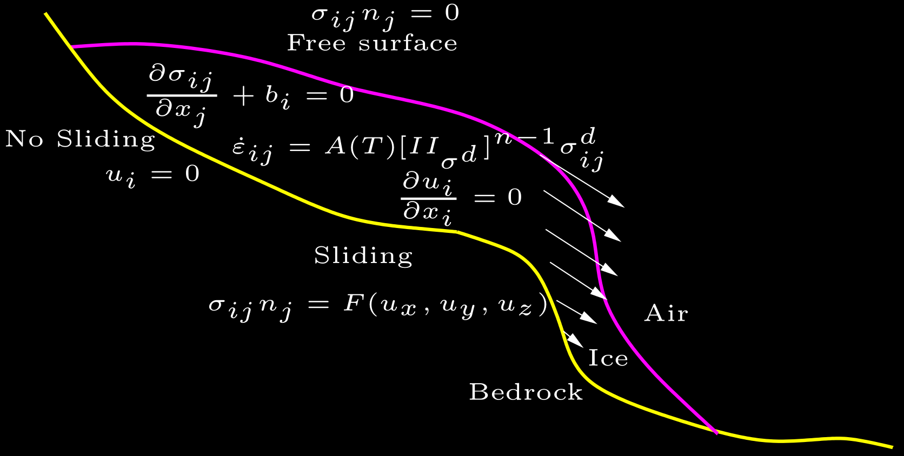
Note that the ice flow speed is independent of time!
Shallow ice models (since glaciers are shallow)#
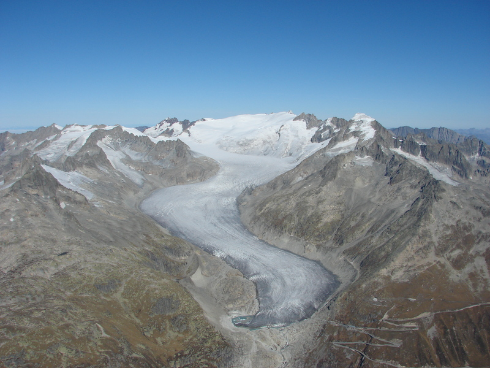 |
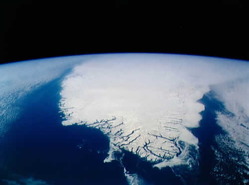 |
source: G. Kappenberger |
source: NASA |
Mountain glacier |
Ice sheet |
aspect ratio \(\sim 1/10\) |
aspect ratio \(\sim 1/1000\) |
Shallow Ice Approximation (SIA)#
Simplest ice flow model, velocity given by a formula (\(n=3\)):
SIA is obtained by neglecting \(\mathcal{O}(\epsilon^k)\), where \(\epsilon\) is the aspect ratio.
Valid for: thin ice, inland ice sheets, wide glaciers. Not valid for: thick ice, ice domes, narrow glaciers, fast sliding.
Shallow Ice Approximation (SIA)#
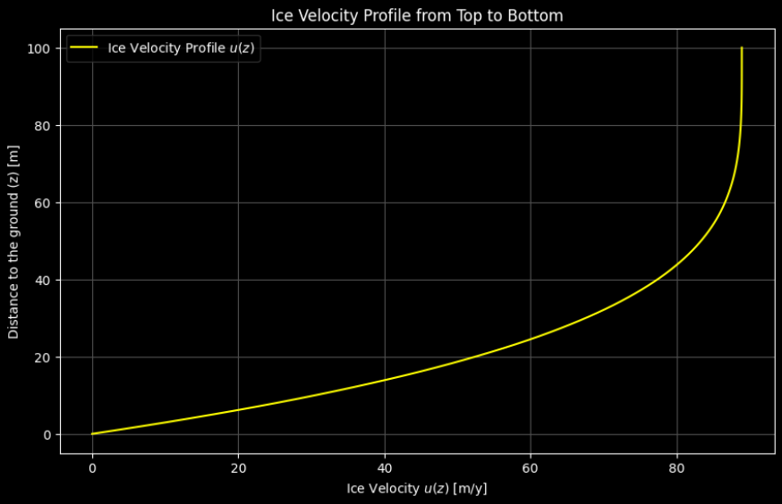
Two (simplified) shallow ice models#
SIA (Shallow Ice Approximation) -> suitable for pure shearing
SSA (Shallow Shelf Approximation) -> suitable for pure sliding
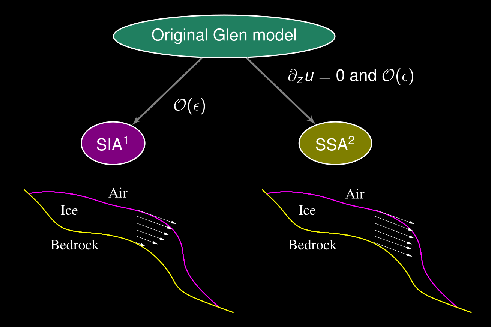
IGM solves a higher-order model (Blatter–Pattyn) that captures both.
Dynamics of marine ice sheets#
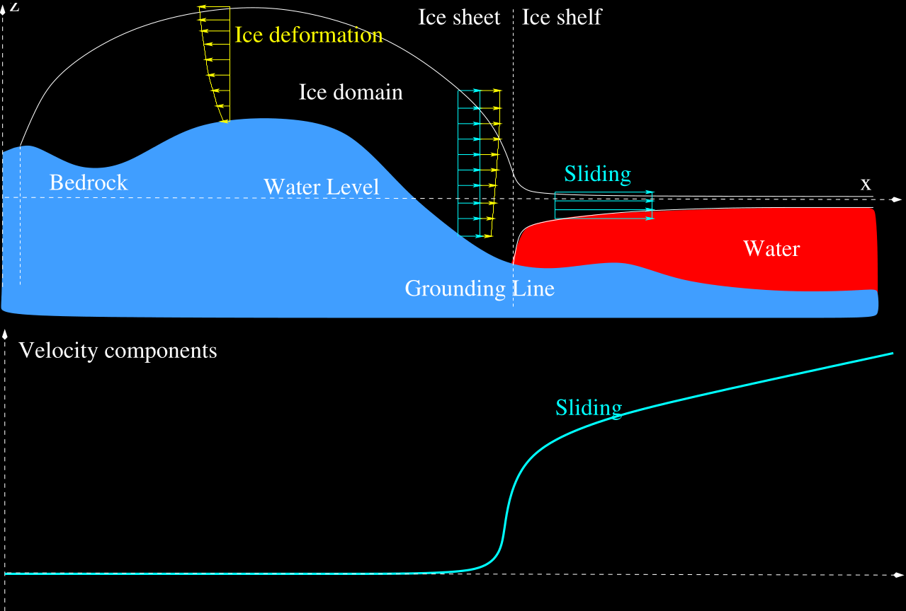
Dynamics of the Antarctic Ice Sheet#

Ice flow field in Antarctica, the pink areas display where ice is fastest, over ice shelves (floating ice). See the NASA website for animations. Source: NASA.
Connecting ice flow and mass conservation#
Rate of change of thickness + flux divergence = surface mass balance
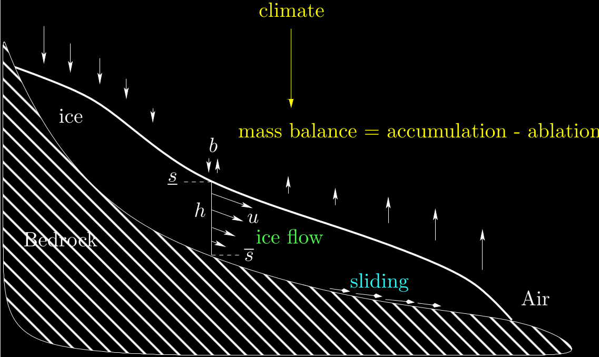
Glacier evolution equation#
Combining SIA (1) with \(n=3\) and no sliding with mass conservation (2) leads to a nonlinear diffusion equation (here in 1D) that predicts the evolution of the glacier geometry:
where \(D(h)\) is the ice diffusivity
➡️ This is exactly what you will code/play with in the tutorial.
II> Numerical modelling#
Need for a numerical glacier evolution model#
The above equations are too complex to be solved analytically
➡️ we need a numerical model (Link to the course on numerical modelling)

The glacier must be meshed/discretized …#
to solve the equations numerically.
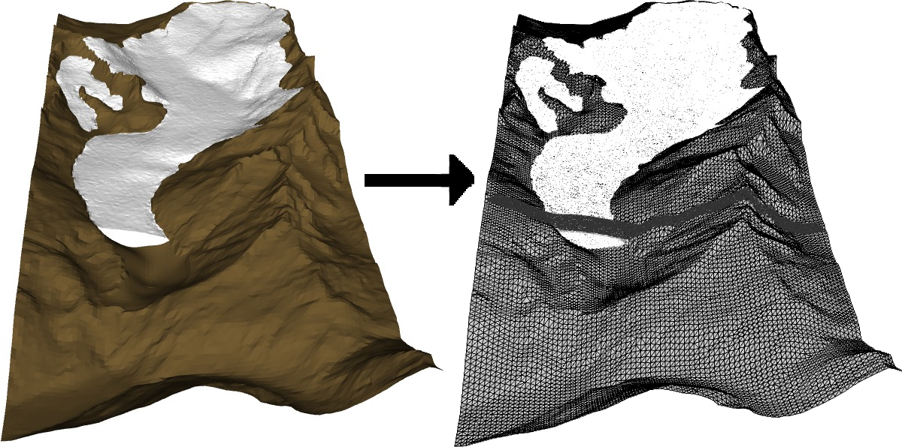
Transient glacier evolution computation#
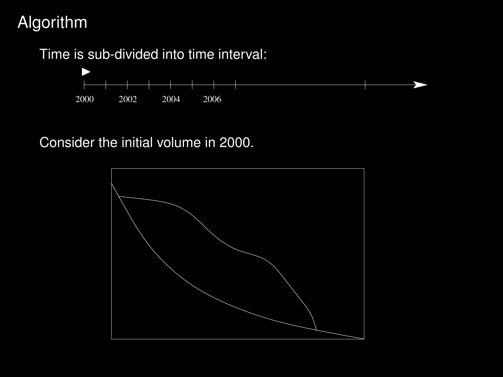
Combining ice flow and mass balance models#
The algorithm updates the glacier surface at each time step, accounting for both ice flow and surface mass balance
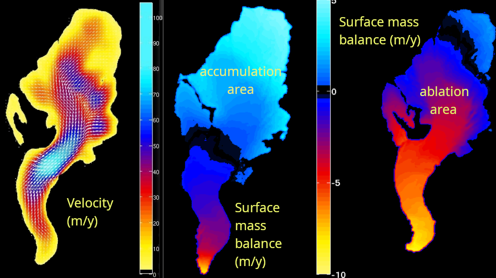
Numerical models#
The SIA-based equations can be solved in a few lines of code (Tutorial), see also the course on numerical modelling.
There exists many glacier evolution models developed by glacier modellers: Elmer/Ice, PISM, ISSM, CISM, OGGM, IcePack, …
Here we will use the “Instructed Glacier Model” (IGM, developed at UNIL), a Python-based glacier model accelerated by Graphics Processing Units (GPU) ➡️ Session 2
III> Present-day and paleo glacier applications#
Modelling the evolution of Aletsch Glacier#

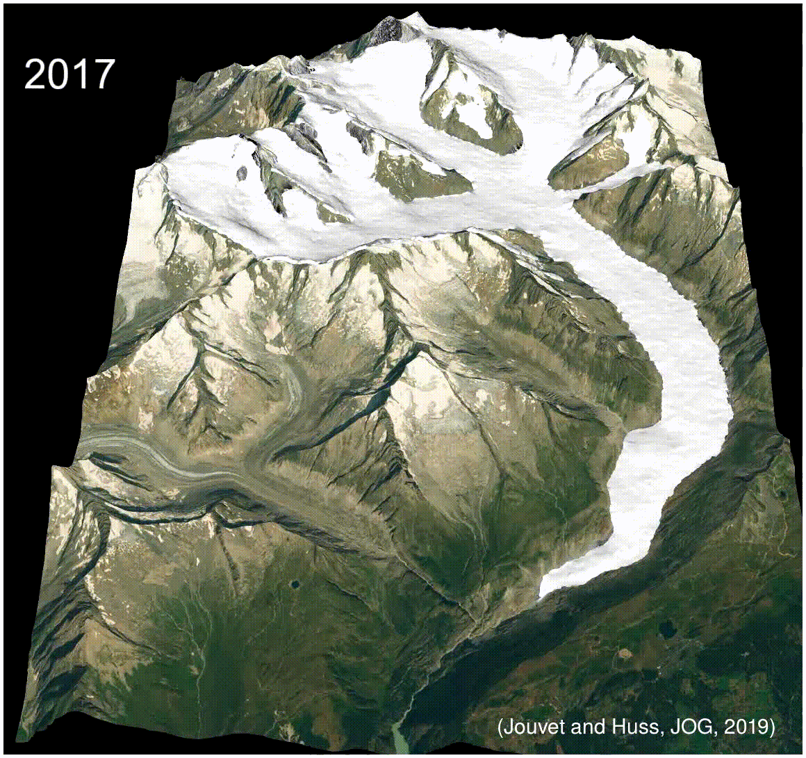
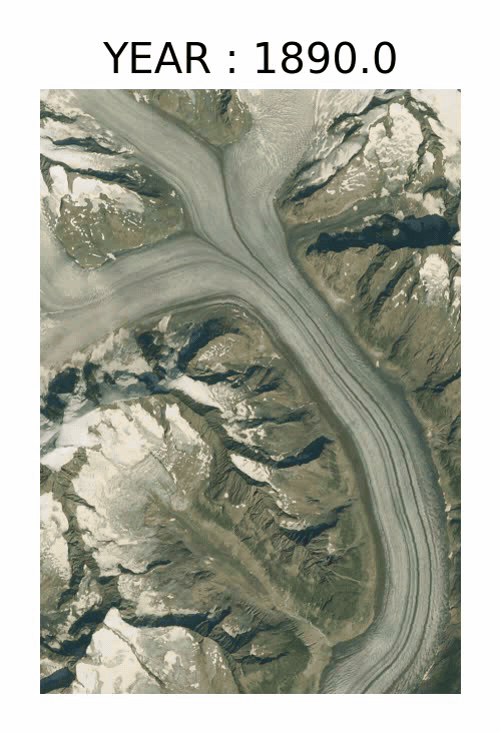
Key numbers: ~ 20 km long – 80 km² – 13 km³
➡️ 1880–2010: Model validation (Jouvet et al., JOG 2011) ➡️ 2010–2100: Multiple climate scenarios (Jouvet & Huss, JOG 2019)
See the simulation page
Paleo glacier modelling in the Alps with IGM#
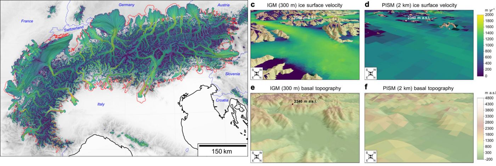
Modelling last ice age glacier evolution in the Alps: https://youtu.be/7yaEPfkWIcQ
and with particule tracking : https://www.youtube.com/@IGMGlacierModel
(Leger, Jouvet et al., Nature Com., 2025), (Leger and al., 2026)
Ice flow modelling for landscape evolution#
… to model the alternation of ice flow-driven glacial (U) and fluvial (V) erosion.
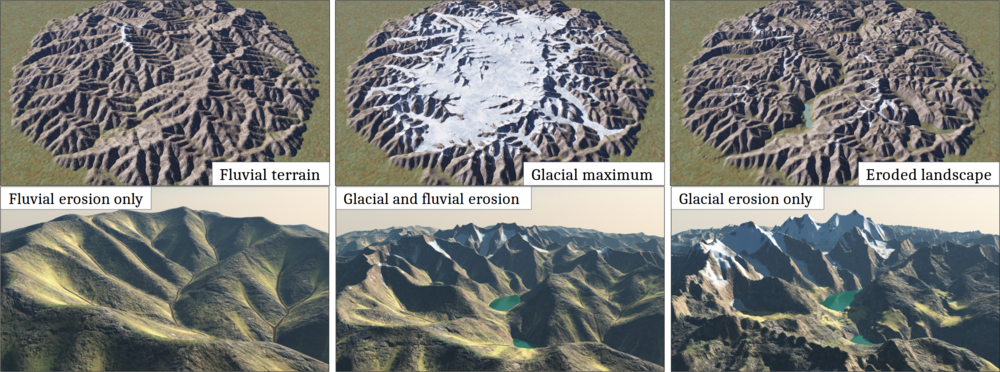
(Cordonnier, Jouvet et al., SIGGRAPH, 2023)
Simulation: https://youtu.be/xfk_J4VhdWA
A cold case solved with a glacier model#
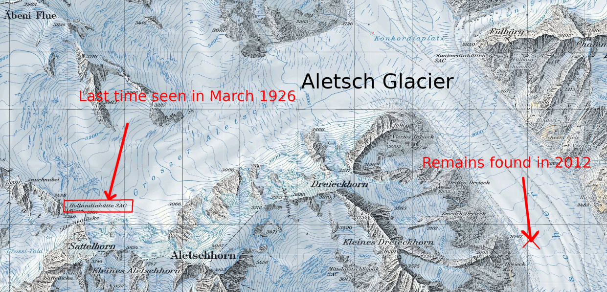
➡️ March 1926: the Ebener brothers vanish on the Great Aletsch Glacier ➡️ 2012: their remains are found near the tongue, ~10 km downstream
Can glacier modelling help clyrifying the fate of Ebener’s brothers?
(Jouvet and Funk, JOG, 2013)
Short film: https://youtu.be/cyKb-P3mwDk